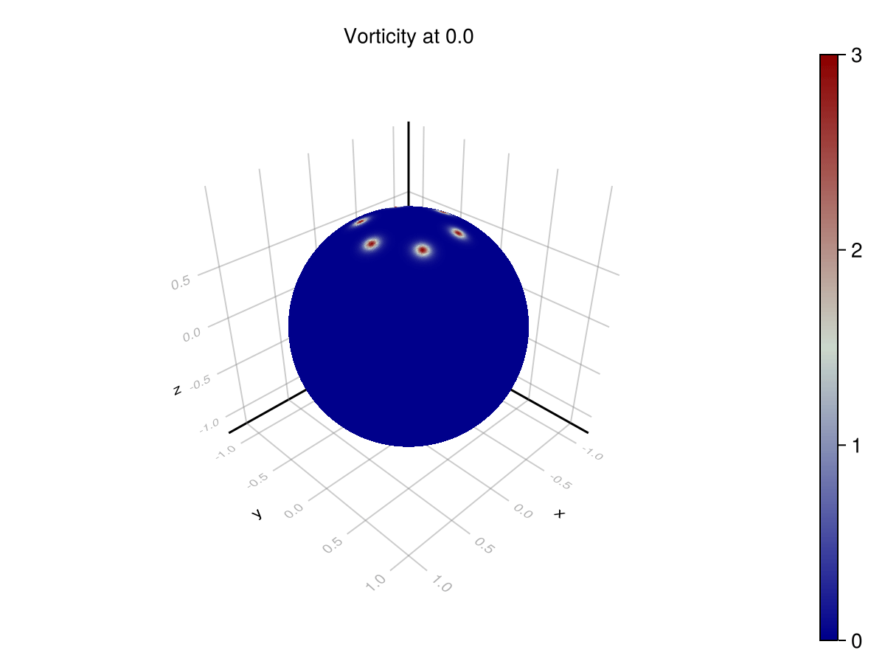
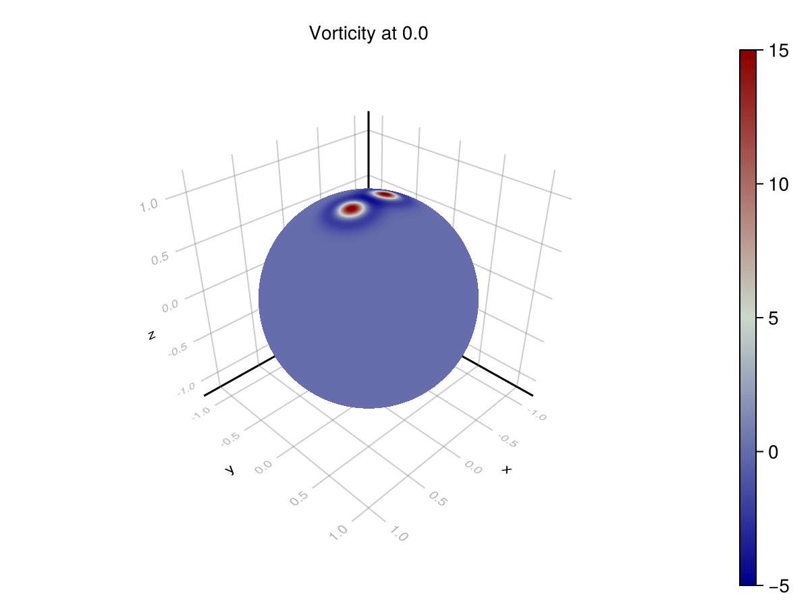
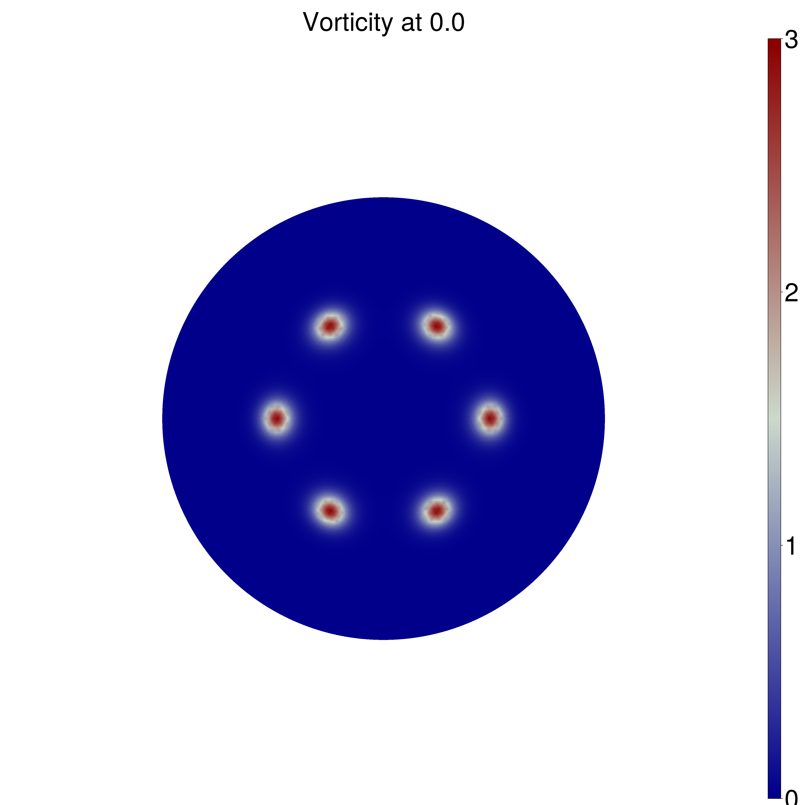
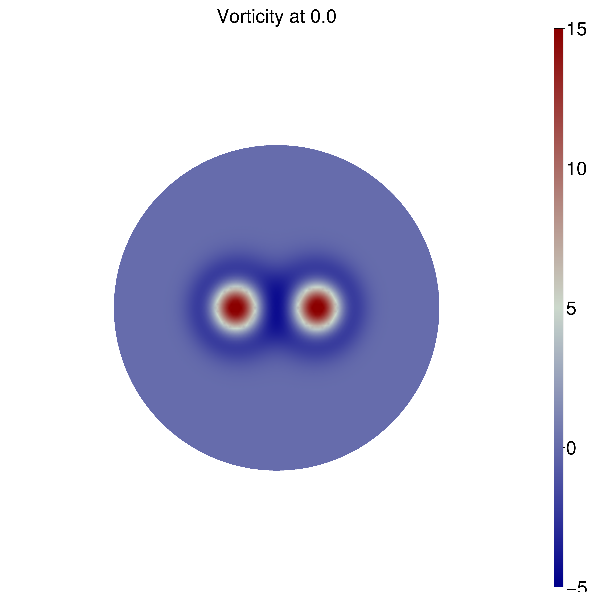
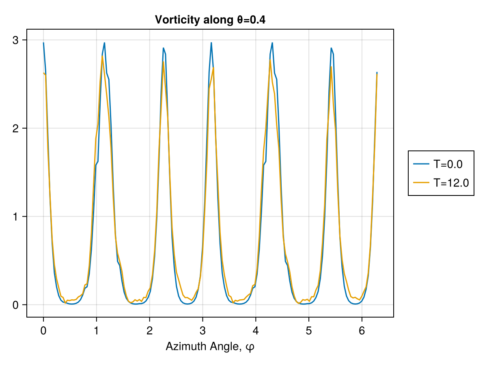

Navier Stokes Vorticity Model


This docs page demonstrates a discretization of the invisicd incompressible Navier Stokes equations using the Discrete Exterior Calculus.
The formulations are based on those given by Mohamed, Hirani, Samtaney (in turn from Marsden, Ratiu, Abraham).
However, a new discretization is produced for purposes of brevity, to demonstrate novel discretizations of certain operators, and to demonstrate the automated Decapodes workflow.
The full code that generated these results is available in a julia script.
Let's first demonstrate an (incorrect) formulation of the equations to demonstrate how one can iteratively develop a Decapodes model. This is intended to show how easy it is to edit a Decapodes model to improve the quality of the physical formulation.
This approach can be combined with the multiphysics described in other pages to improve the quality of other fluid mechanics simulations.
An initial attempt at solving the vorticity formulation of the inviscid incompressible Navier-Stokes momentum equation could be:
Vorticity Formulation
eq11_incorrect = @decapode begin
d𝐮::DualForm2
𝐮::DualForm1
𝐮 == d₁⁻¹(d𝐮)
∂ₜ(d𝐮) == (-1) * ∘(♭♯, ⋆₁, d̃₁)(∧ᵈᵖ₁₀(𝐮, ⋆(d𝐮)))
end
nothing # hideThis formulation comes from the fact that you are treating du (vorticity) as the only state variable and computing the velocity field, which you need to advect vorticity along the flow with a linear solve of the exterior derivative d₁. In other words, the velocity field is computed as the pseudo-inverse of the differential operation that computes curl.
Initial Conditions
We can check these dynamics on a couple of test cases on the sphere with well-known analytic solutions. In the case of dual Taylor vortices, we expect the vortices to repel one another, and in the case of a ring of (smoothed) point vortices, we should expect the vortices to rotate along the initial line of latitude. See "Wave and vortex dynamics on the surface of a sphere" (1993) from Polvani and Dritschel for analysis.
The following plots are shown from directly above the north pole of the sphere.
Point Vortices

Taylor Vortices

Numerical Solutions (Incorrect formulation)
This formulation is very unstable for both sets of initial conditions, failing approximately 0.4% of the way into the simulation.
max u=NaN
│ progress = 0.004
└ @ OrdinaryDiffEqCore /blue/fairbanksj/luke.morris/julia/packages/OrdinaryDiffEqCore/H25Bn/src/integrators/integrator_utils.jl:283
┌ Warning: Instability detected. Abortingmax u=NaN
│ progress = 0.005
└ @ OrdinaryDiffEqCore /blue/fairbanksj/luke.morris/julia/packages/OrdinaryDiffEqCore/H25Bn/src/integrators/integrator_utils.jl:283
┌ Warning: Instability detected. AbortingStreamfunction-Poisson Formulation
There are cohomological reasons why the above model formulation produces low-quality simulations. The variable X is physically required to be in the kernel of $\Delta$, but that isn't guaranteed by the model formulation above. To fix this, you can use the solve for the stream-function by introducing a Laplacian solve as part of the update law.
Due to the equation $du = -\Delta\psi$ we can solve for the stream function with a linear solve of the Laplacian.
This transformation can be implemented by editing the Decapode formulation and regenerating the simulator.
eq11_inviscid_poisson = @decapode begin
d𝐮::DualForm2
𝐮::DualForm1
ψ::Form0
ψ == Δ⁻¹(⋆(d𝐮))
𝐮 == ⋆(d(ψ))
∂ₜ(d𝐮) == (-1) * ∘(♭♯, ⋆₁, d̃₁)(∧ᵈᵖ₁₀(𝐮, ⋆(d𝐮)))
endWith this formulation, we achieve these numerical results:
Phenominological Assessment
These scenarios are used to test that a simulator achieves the correct phenomenology. In the rotating point vortices case, we are looking for periodicity in the solution for vorticity. As the vortices advect around the sphere, they return to their original locations. This can be seen on the azimuthal profile. The original formulation does not exhibit this phenomenon, since it is unstable, but the corrected formulation does.
We can visualize the distribution of vorticity at the $\theta = 0.4$ latitude. The difference between the distributions at $t=0$ and $t=12$ is accumulated error.

[ Info: Page built in 0 seconds.
[ Info: This page was last built at 2024-12-09T20:20:32.102.